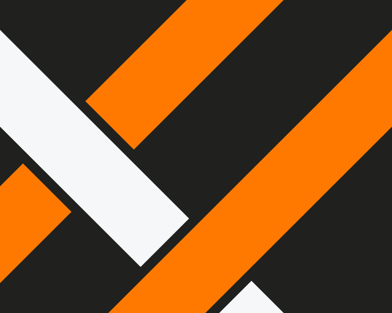
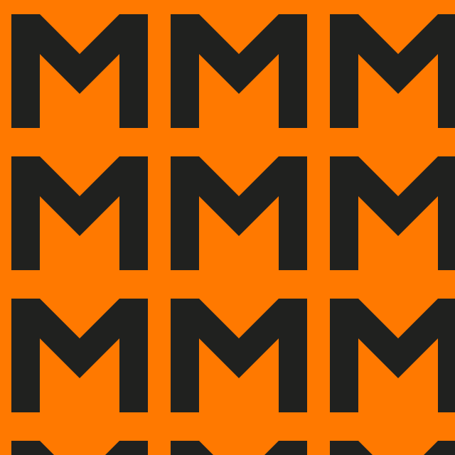
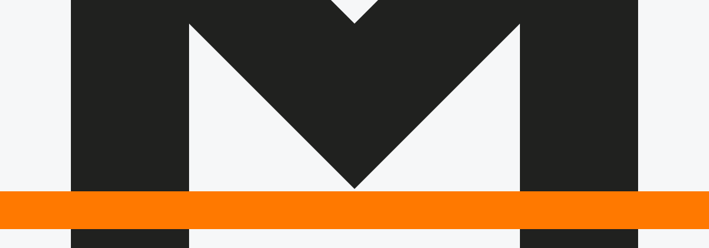

Your work,
woven together.
A workspace for your notes, projects, and knowledge. One connected place for the information OpenJM can use to help you with real work.
Explore the identitySeparate pieces.
Shared meaning.
A note holds a thought. A project gives it direction. A shared reference adds context. Their value grows when they belong together.
Monolith is being imagined as a home for that connected information: a working foundation for individuals, small teams, and assistance from OpenJM.
work with.The common thread.
The identity makes the connection visible. Two upright bands meet, cross, and hold together as one unmistakable M.
A common thread.
A singular mark.
A geometric symbol with an open, steady wordmark. The weave adds character; the simple silhouette keeps it recognizable.

Room to breathe.
Keep at least one band-width (x) clear on every side. Measure from the visible edges of the symbol or lockup.
Small, still Monolith.
Below 48 px high, remove the overlap cuts. Use the simplified symbol at 16 px and above; keep the full lockup at least 160 px wide.
Make it yours to work with.
Reusable SVGs. Transparent backgrounds. Outlined lettering.


Warmth, with
a clear head.
Orange brings the energy. Charcoal brings the structure. Cool white makes room for the work. A compact palette, with a role for every color.
Thread orange
#ff7900
Identity & broad surfacesCharcoal
#20211f
Type & structureCool white
#f6f7f8
Space & clarityCharcoal on orange: 6.15:1. Charcoal on cool white: 15.07:1. Reverse to cool white on charcoal. On light surfaces, orange is for graphics, not body text.
Sora
Geometric in shape.
Human in tone.
A place for
what you know.
Aa Bb Cc Dd Ee Ff Gg Hh Ii Jj Kk Ll Mm
Nn Oo Pp Qq Rr Ss Tt Uu Vv Ww Xx Yy Zz
0123456789 & @ ! ?
One idea.
Room to unfold.
The bands leave the mark and become a language. Cross them, crop them, or repeat them. Keep the edges crisp and the connections deliberate.



At home
with your work.
Recognizable in a small corner of your screen. Confident across a notebook cover. The same thread runs through every expression.
Your work,
woven together.